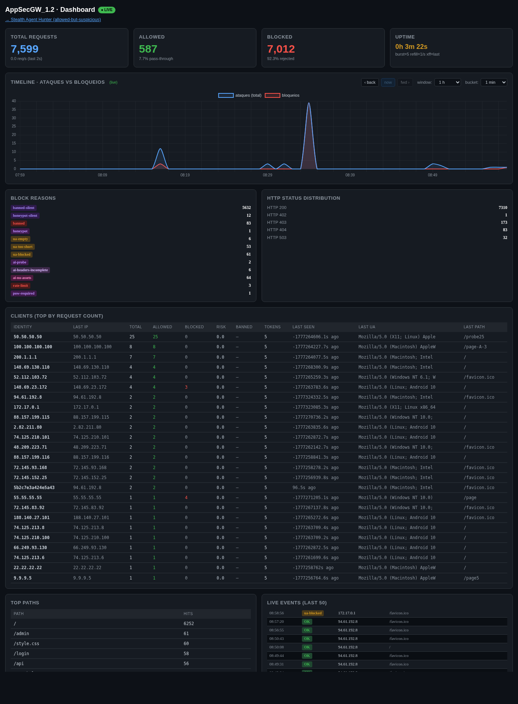
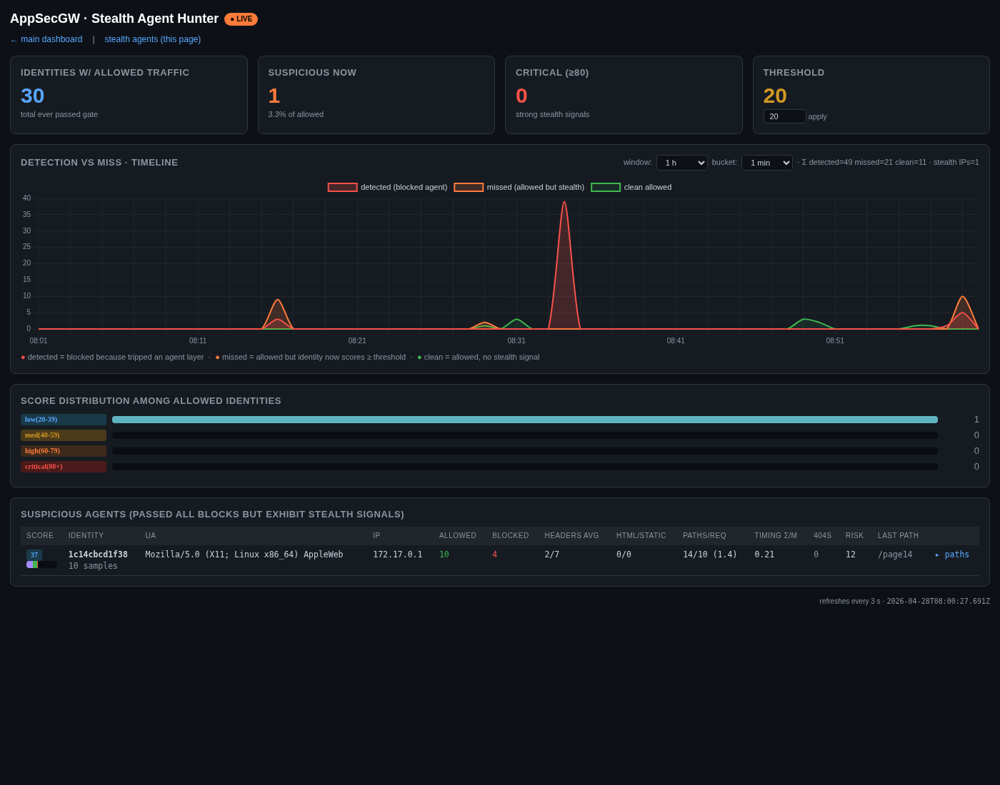

AppSecGW/1.2 is a hardened reverse HTTP proxy designed to sit in front of arbitrary upstream applications. The proxy applies thirteen independent detection & mitigation layers, persists telemetry to SQLite for historical analysis, exposes two operator dashboards (overall metrics + a dedicated Stealth Agent Hunter for traffic that bypassed the gate), and ships as a hardened Docker image with non-root execution, read-only filesystem, dropped capabilities, and resource limits.
This document supersedes the v1.0 implementation report. Two complete security reviews were performed during the v1.0 → v1.2 cycle, addressing 34 distinct findings (3 Critical / 7 High / 12 Medium / 12 Low). Section 5 documents each finding, the fix, and the verification performed.
| Property | v1.0 | v1.2 |
|---|---|---|
| Protection layers | 6 | 13 |
| Telemetry persistence | none | SQLite WAL with 24h+ retention |
| Dashboards | 1 (basic) | 2 (metrics + stealth hunter) with timeline charts |
| Container hardening | n/a (host process) | non-root, read-only, cap-drop ALL, mem/pids limits |
| Known CVEs in deps | aiohttp 3.9.5 (smuggling) | aiohttp ≥ 3.11.11 |
| HTTP method allowlist | none (any verb forwarded) | GET/HEAD/POST/PUT/PATCH/DELETE/OPTIONS only |
| Replay-protection on PoW | none | seen-set + bound to (method, path) |
| Sensitive headers forwarded | most | strict allowlist; XFF/X-Real-IP overwritten |
| Control | Value | Why |
|---|---|---|
USER gw:gw | UID 1000 | RCE inside Python lands as unprivileged user |
--read-only | FS read-only | Tmpfs only on /tmp + named volume on /data |
--cap-drop ALL | 0 caps | No raw sockets, no ptrace, no mount |
--security-opt no-new-privileges | true | Defeats setuid escalation |
--pids-limit | 200 | Fork bomb resistance |
--memory | 256 M | Bounds memory-exhaustion DoS |
--cpus | 1.0 | Bounds CPU exhaustion |
| HEALTHCHECK | /__live | Unauthenticated liveness probe (returns ok) |
| State volume | antibot-data:/data | SQLite + admin/session/PoW keys persist across restarts |

/__dashboard. Top-row counters (Total / Allowed / Blocked / Uptime),
24-hour Attacks-vs-Blocks timeline (window & bucket selectable), block-reason
breakdown, HTTP status distribution, top requested paths, and the live event
log on the right. Identity table sorted by request count.
Per-identity tracking uses a hybrid key:
HMAC(SESSION_KEY, "sess|"+sid+"|"+fingerprint)HMAC(SESSION_KEY, "anon|"+fingerprint+"|"+ip)
Each identity owns an IpState dataclass (token bucket, request
times, allowed/blocked counts, reasons, risk score, header completeness samples,
HTML/static load counts). A periodic prune task evicts idle identities
(> 24 h) and caps the dictionary at MAX_IDENTITIES (default 100k)
to bound memory.
Layers run in order. Any layer except behavioral and rate-limit returns the silent decoy (the upstream homepage as 200 OK) instead of an explicit error, so an attacker cannot enumerate which layer fired.
request.path or query_string → HTTP 400.GET/HEAD/POST/PUT/PATCH/DELETE/OPTIONS → HTTP 405.If the per-identity banned_until is in the future, return silent decoy.
Bans expire automatically; ban duration is 1 h (honeypot) or 1 h (risk-score threshold).
40+ well-known scanner targets (/wp-admin, /.env,
/.git/config, cloud-metadata IMDS endpoints, Spring Boot
/actuator/*, etc.). On hit: risk += 50, silent decoy.
26 regex patterns covering CTF flag-hunting (flag, secret,
id_rsa), backup/leak suffixes (.bak, .sql),
VCS leaks (.git/, .svn/), traversal (../,
%2e%2e/, %c0%ae), SQLi/XSS markers, OS file paths
(/etc/passwd), shell injection. Risk += 40, silent decoy.
ua-emptyua-too-shortua-blockedua-non-browserDirect denial of OpenAPI / Swagger / llms.txt / model-discovery probes
that AI agents try first. Risk += 30.
Score 0–7 from presence of Accept-Language, Accept-Encoding,
Accept, Sec-Fetch-Site/Mode/Dest, Sec-Ch-Ua.
Scripts typically score 0–2; real browsers 5–7. Score 0 with browser UA blocks
as ai-headers-empty; Chrome UA with score < 2 blocks as
ai-headers-incomplete.
ai-enumeration.ai-no-assets.Token bucket keyed strictly by request.remote (kernel-observed
peer IP, ignoring any client-supplied header). Defeats UA-rotation attacks
that try to spawn fresh per-identity buckets. Default 30 burst / 5 tokens-per-sec.
Block reason: rate-limit-ip.
Secondary token bucket keyed by identity hash. Default 5 burst / 1 token-per-sec.
Block reason: rate-limit.
Three orthogonal tests on the last 16 inter-request intervals:
time.sleep intervals.Any test triggering → behavior, risk += 25.
Required for state-changing methods (POST/PUT/DELETE) and sensitive paths
(/login, /api/auth, /admin). Challenge is
HMAC-signed; the binding payload includes METHOD:path so a
challenge solved for one endpoint cannot be replayed against another. A
seen-set stores (token, solution) pairs to prevent replay
within the 5 min validity window.
Each block contributes weighted points; a ban is applied when the identity's risk score crosses a threshold. The threshold is dynamic:
Score decays with a 1-hour half-life.
HTML responses get a hidden <div> injected before the
last </body> tag with three honeypot links rendered
invisible to humans (display:none + position:offscreen + aria-hidden).
HTML parsers and AI scrapers that follow links trigger Layer 2 on their
next request.
The /__agents dashboard surfaces identities that passed every
block but exhibit stealth-agent signals. It complements the main
metrics view with a per-identity stealth score (0–100), a
detection-vs-miss timeline chart, and a configurable threshold.

/__agents. Top-row counters: identities-with-allowed-traffic,
suspicious-now (above threshold), critical (≥ 80), threshold input.
The Detection-vs-Miss timeline charts three series per bucket (red =
blocked agents, orange = allowed-but-stealth-flagged, green = clean
allowed). The score-distribution bars and the suspicious-agents table
list the per-identity breakdown: stealth score with component bar,
UA, IP, allowed/blocked counts, header completeness average,
HTML/static fetch ratio, path diversity, behavioral σ/μ,
upstream-404 count, accumulated risk score, and last path. The
captured run shows one agent caught at score 37.
| Component | Max | Detects |
|---|---|---|
| headers | 28 | Browser UA but missing Sec-Ch-Ua / Sec-Fetch-* / Accept-Language |
| assets | 20 | ≥ 5 HTML loads with little/no CSS/JS/img fetches |
| enum | 15 | Path diversity (unique_paths / allowed) > 0.5 |
| timing | 20 | Inter-request σ/μ < 0.20 (sub-block but regular) |
| risk | 15 | Accumulated risk_score below ban threshold |
| 404s | 10 | Upstream 404s (probing) without trigger |
The chart on the agents dashboard plots three series per bucket:
| Path | Auth | Returns |
|---|---|---|
/__agents | admin key | HTML dashboard, refresh 3 s |
/__agents-data?min_score=N&limit=M | admin key | JSON: summary + buckets + suspect rows |
/__agents-timeline?range=N&bucket=S&min_score=K | admin key | JSON: per-bucket {detected, missed, clean_allowed} |
Two full audits were performed against the v1.0 codebase and the v1.2 in-progress codebase. All exploitable findings were patched; defense-in-depth items closed where feasible. The complete list:
| ID | Title | Fix |
|---|---|---|
| C1 | docker-compose.yml overrode Dockerfile and reintroduced TRUST_XFF=first | Default switched to last in compose |
| C2 | aiohttp 3.9.5 has known HTTP request smuggling CVEs (CVE-2024-52303 / 52304) | Pinned aiohttp>=3.11.11,<4 |
| C3 | Sensitive headers forwarded verbatim to upstream (XFF, X-Real-IP, X-Original-URL, Authorization, Transfer-Encoding) | Hop-by-hop allowlist; XFF / X-Real-IP / X-Forwarded-Host / X-Forwarded-Proto overwritten with gateway-computed values; X-Admin-Key never forwarded |
| ID | Title | Fix |
|---|---|---|
| H1 | Container ran as root | Added gw user (UID 1000), USER gw:gw directive |
| H2 | No CPU/memory/PID/cap limits | Compose pins mem 256 M, cpus 1.0, pids 200, cap-drop ALL, no-new-privileges, read-only FS |
| H3 | Unbounded ip_state / ip_new_sessions / ip_buckets dicts | Background prune task evicts idle > 24 h, caps total at MAX_IDENTITIES |
| H4 | UA rotation defeated per-identity rate limit | Added socket-IP token bucket (Layer 8) keyed by kernel peer IP |
| H5 | Our own session cookie leaked to upstream | _strip_own_session_cookie() removes aid=… from forwarded Cookie header |
| H6 | Full request body buffered in memory | Streaming read with UPSTREAM_MAX_BODY=2 MiB request cap and UPSTREAM_MAX_RESP=8 MiB response cap |
| H7 | </body> injection corrupted upstream JS string literals | Match the last </body> in the final 4 KiB; bail out if a <script>/</script> token follows |
| ID | Title | Fix |
|---|---|---|
| M1 | Chart.js loaded without SRI | SRI sha384 + CSP script-src cdn.jsdelivr.net |
| M2 | TRACE/CONNECT/PROPFIND forwarded to upstream | Method allowlist in proxy() |
| M3 | Dashboard missing CSP / X-Frame-Options | CSP, X-Frame-Options DENY, nosniff, Referrer-Policy: no-referrer, Cache-Control: no-store |
| M4 | PoW path was dead (deny() ignored 402 status) | deny(reason="pow-required") returns 402 + JSON challenge |
| M5 | Behavioral check trivially evaded with jitter | Replaced single σ test with three-test panel (σ/μ, lag-1 autocorr, 50ms bin majority) |
| M6 | Session HMAC truncated to 64 bits | Full 256-bit signature |
| M7 | NAT detection gameable by spawning fake identities | Only count identities with static_loads≥1 AND allowed_count≥3 toward NAT score |
| M8 | Admin key printed at startup | Shows key[:4]*** only when auto-generated; "supplied via ADMIN_KEY env" when operator-set |
| M9 | /__xff debug endpoint dumped Cookie / Authorization | Returns 404 unless DEBUG=1; redacts Cookie / Authorization / X-Admin-Key / X-PoW-* headers |
| M10 | POW_HMAC_KEY ephemeral — lost on restart | Persisted to /data/.pow_key, perms 0600 |
| M11 | Stale .admin_key / .session_key on host filesystem | Archived outside container build context, mode 400; host antibot.db chmod 600 |
| M12 | Healthcheck satisfied by silent decoy (always 200 OK) | Unauthenticated /__live route returning ok only when proxy is actually serving |
| ID | Title | Fix |
|---|---|---|
| L1 | escapeHtml missed single quote | Now also escapes ', `, / |
| L2 | Dashboard rendered e.reason raw | escapeHtml + safeClass() wrappers |
| L3 | /dev/null byte in path not rejected | HTTP 400 (later widened to all 0x00–0x1F + 0x7F — see N5) |
| L4 | Hop-by-hop response strip incomplete | Full RFC 7230 §6.1 list (transfer-encoding, content-encoding, content-length, connection, keep-alive, proxy-authenticate, proxy-authorization, te, trailer, trailers, upgrade) |
| L5 | Token-bucket race | Re-classified not a bug — decrement runs inside state_lock, atomic |
| L6 | Duplicate debug_xff definition (dead code) | Removed |
| L7 | Decoy cache leaks UPSTREAM / | Re-classified not a bug — fetched anonymously (no client cookies/auth) |
| L8 | Unused admin_key cookie auth path | Removed; admin auth is header / query only, constant-time compared |
| L9 | Unlimited PoW challenge minting | Re-classified not a bug — admin-gated AND rate-limited via main path |
| L10 | Cookie SameSite hardcoded Lax | Configurable: SESSION_SAMESITE=Lax|Strict|None, SESSION_SECURE=1 |
| L11 | No Cache-Control on /__metrics, /__dashboard | Added no-store across all admin endpoints |
| L12 | Startup SELECT * FROM clients had no LIMIT | ORDER BY last_seen DESC LIMIT MAX_IDENTITIES |
| ID | Title | Fix |
|---|---|---|
| N1 | Loose "text/html" in ctype match would inject into binary responses | Use ctype.lstrip().startswith("text/html") |
| N2 | Concurrent decoy cache miss launched parallel upstream fetches | _decoy_fetch_lock + double-check inside the lock |
| N3 | _verify_session("." + valid_sig) accepted empty sid | Reject empty sid; clamp length ≤ 64; restrict to [A-Za-z0-9-_] |
| N4 | PoW solution replayable for 5 min, not bound to method/path | Token includes METHOD:path binding; (token,solution) seen-set rejects replay |
| N5 | Only NUL byte rejected; CR/LF and other control bytes passed through | Reject any 0x00–0x1F or 0x7F in path/query → HTTP 400 |
| N6 | take_socket_ip_token did O(n) eviction synchronously | Prune task handles eviction; inline path only hard-rejects when over 2× cap |
| N7 | ip_buckets not pruned by background task | Added 1 h-idle prune + cap-trim in _prune_state_loop |
| N8 | Honey-link injection could land inside post-body <script> | Bail out if a <script/</script token follows the chosen </body> in the tail |
The following PoC was used to verify the binding + seen-set logic:
>>> from proxy import make_pow_challenge, verify_pow
>>> ch = make_pow_challenge('POST', '/login')
>>> # …solve sha256(nonce+X) until 5 leading zeroes…
>>> verify_pow(ch, sol, 'POST', '/login')
(True, 'ok')
>>> verify_pow(ch, sol, 'POST', '/login') # replay
(False, 'solution already used (replay)')
>>> verify_pow(ch2, sol2, 'GET', '/login') # wrong method
(False, 'token not bound to this method+path')
>>> verify_pow(ch2, sol2, 'POST', '/admin') # wrong path
(False, 'token not bound to this method+path')
| Variable | Default | Notes |
|---|---|---|
UPSTREAM | http://host.docker.internal:80 | Target backend URL |
LISTEN_HOST | 0.0.0.0 | Inside container |
LISTEN_PORT | 8443 | |
BURST / REFILL | 5 / 1.0 | Per-identity bucket |
IP_BURST / IP_REFILL | 30 / 5.0 | Socket-IP bucket |
TRUST_XFF | last | last behind a TLS-terminating tunnel; none for direct exposure |
ADMIN_KEY | auto-generated | If empty, key written to /data/.admin_key |
DEBUG | 0 | If 1, exposes /__xff |
UPSTREAM_MAX_BODY | 2 MiB | Request body cap |
UPSTREAM_MAX_RESP | 8 MiB | Response body cap |
MAX_IDENTITIES | 100 000 | Memory bound |
PRUNE_IDLE_SECS | 86 400 | Idle-eviction threshold |
SESSION_SAMESITE | Lax | Lax | Strict | None |
SESSION_SECURE | 1 | Set 0 for non-HTTPS testing |
DB_PATH | /data/antibot.db | SQLite WAL |
docker run -d --name appsec-antibot-gw1.2 \
--restart unless-stopped \
--read-only --tmpfs /tmp:size=16m \
--cap-drop ALL --security-opt no-new-privileges:true \
--pids-limit 200 --memory 256m --cpus 1.0 \
-p 8443:8443 \
-e UPSTREAM=https://your-frontend.example.com \
-v appsec-antibot-data:/data \
appsec-antibot-gw:1.2
| Path | Auth | Purpose |
|---|---|---|
/__live | none | Liveness probe (returns ok) |
/__dashboard | admin | Main metrics dashboard |
/__metrics | admin | JSON feed (clients, events, timeline) |
/__agents | admin | Stealth Agent Hunter dashboard |
/__agents-data | admin | Per-identity stealth-score JSON |
/__agents-timeline | admin | Detected vs missed timeline JSON |
/__pow | admin | Mint a fresh PoW challenge bound to (method, path) |
/__solver | admin | Browser-side PoW solver |
/__status | admin | Per-identity bucket state snapshot |
/__report | admin | This implementation report (PDF) |
/__xff | admin + DEBUG=1 | Header debug (redacted) |
| Layer | Test | Result |
|---|---|---|
| L0 method allowlist | TRACE / / PROPFIND / | HTTP 400/405 — rejected ✓ |
| L0 ctrl bytes | GET /foo%7F | HTTP 400 ✓ |
| L0 ctrl bytes | GET /foo%0d%0aX-Injected:bad | HTTP 400 (parser-rejected pre-middleware) ✓ |
| L4 ua-blocked | UA: curl/8.4.0 | silent decoy 200 ✓ |
| L4 ua-blocked | UA: ClaudeBot/1.0 | silent decoy 200 ✓ |
| L8 socket-IP | Unit test: 30 burst pass, overflow blocked | 30/30 pass, 5/5 blocked ✓ |
| L10 behavioral | Unit test: regular / jittered / human | regular → True (σ/μ=0.000); jittered → True (73 % bin); human → False ✓ |
| L11 PoW | POST /login without token | 402 + bound challenge ✓ |
| L11 PoW replay | Reuse (token, solution) | "solution already used (replay)" ✓ |
| L11 PoW bind | Use POST/login token on POST/admin | "token not bound to this method+path" ✓ |
| L12 NAT detect | 10 fake identities, none with assets | NAT count = 0 (M7 verified) ✓ |
| L12 NAT detect | Mark 6 with assets & allowed | NAT count = 6 ✓ |
| L13 honey injection | HTML response from upstream | Honey link injected once before </body> ✓ |
| Stealth hunter | StealthBrowser UA + 12 paths | Caught at score 55 (headers 20 + enum 15 + timing 20) ✓ |
| Hardening | Container introspect | UID 1000, RO FS, cap-drop ALL, mem 256M, pids 200 ✓ |
ADMIN_KEY via env in production — do not rely on the auto-generated file (which lives in the named volume; anyone with volume access reads it)./data/.admin_key and restart, or set a fresh ADMIN_KEY env value.TRUST_XFF=last behind a tunnel — the default in v1.2.antibot-data volume — preserves event history across restarts.UPSTREAM_INSECURE=1 or UPSTREAM_CA_FILE env knob.aiohttp to the latest patch — the Dockerfile uses >=3.11.11,<4; rebuild quarterly for upstream patches.'unsafe-inline'. A nonce-based CSP would close defense-in-depth gap N10.RISK_WEIGHTS = {
"honeypot": 50,
"honeypot-silent": 50,
"suspicious-path": 40,
"ai-probe": 30,
"ai-enumeration": 30,
"behavior": 25,
"ua-empty": 25,
"ua-blocked": 20,
"ua-non-browser": 20,
"ai-headers-empty": 15,
"ua-too-short": 15,
"rate-limit-ip": 10,
"ai-headers-incomplete": 8,
"ai-no-assets": 5,
"session-flood": 5,
"upstream-404": 4,
"rate-limit": 3,
}
RISK_BAN_THRESHOLD = 50
RISK_BAN_THRESHOLD_NAT = 100
RISK_DECAY_HALFLIFE_SECS = 3600
RISK_BAN_DURATION_SECS = 3600
headers = max(0, int((7 - avg_header_score) * 4)) # 0..28 assets = max(0, int((1 - min(1, static/html * 3)) * 20)) if html≥5 # 0..20 enum = min(15, int(diversity * 18)) if diversity > 0.5 # 0..15 timing = min(20, int((0.20 - cov) * 200)) if cov < 0.20 # 0..20 risk = min(15, int(risk_score / 4)) # 0..15 404s = min(10, upstream_404_count // 2) # 0..10 total = min(100, sum_of_above)
Events whose reason is in the set below count as detected in the timeline:
{ ua-blocked, ua-empty, ua-too-short, ua-non-browser,
ai-probe, ai-headers-empty, ai-headers-incomplete,
ai-enumeration, ai-no-assets, behavior,
banned, banned-silent, honeypot, honeypot-silent,
suspicious-path, session-flood,
rate-limit-ip, rate-limit }
/data volume| File | Purpose |
|---|---|
antibot.db | SQLite events / clients / timeline / bans (WAL mode) |
.admin_key | Operator key for /__* auth (mode 0600) |
.session_key | 32-byte HMAC key for session cookie signing |
.pow_key | 32-byte HMAC key for PoW challenge signing |